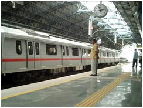

Passenger services :
|
Indian Railways operates 8,702 passenger trains and transports around five billion annually across twenty-seven states and three union territories (Delhi, Pondicherry and Chandigarh). Sikkim is the only state not connected.The passenger division is the most preferred form of long distance transport in most of the country. In South India and North-East India however, buses are the preferred mode of transport for medium to long distance transport.
A standard passenger train consists of eighteen coaches, but some popular trains can have up to twenty-four coaches. Coaches are designed to accommodate anywhere from eighteen to seventy-two passengers, but may actually accommodate many more during the holiday seasons and on busy routes. The coaches in use are vestibules, but some of these may be dummied on some trains for operational reasons. Freight trains use a large variety of wagons.
|
Suburban Rail :  |
Many cities have their own dedicated suburban networks to cater to commuters. Currently, suburban networks operate in Mumbai (Bombay), Chennai (Madras), Kolkata (Calcutta), Delhi, Hyderabad and Pune. Hyderabad and Pune do not have dedicated suburban tracks but share the tracks with long distance trains. New Delhi and Kolkata have their own metro networks namely the New Delhi Metro and the Kolkata metro respectively.
Suburban trains that handle commuter traffic are usually fifteen coaches, with an electric multiple unit (EMU) at each end. The rakes in Mumbai run on direct current, while those elsewhere use alternating current. A standard coach is designed to accommodate ninety-six sitting passengers, but the actual number of passengers can easily double or triple with standees during rush hour. |